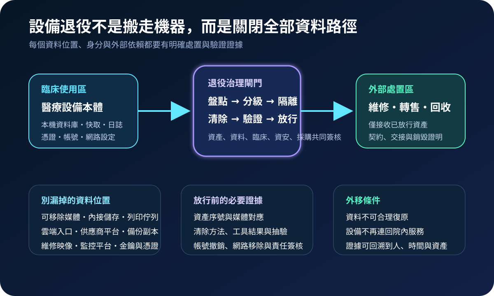
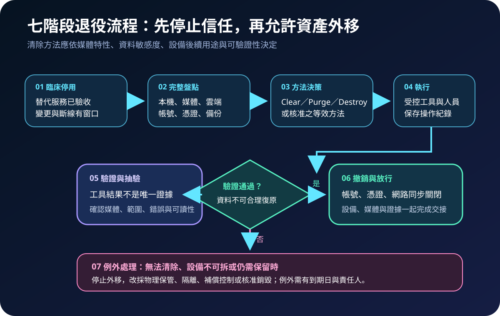
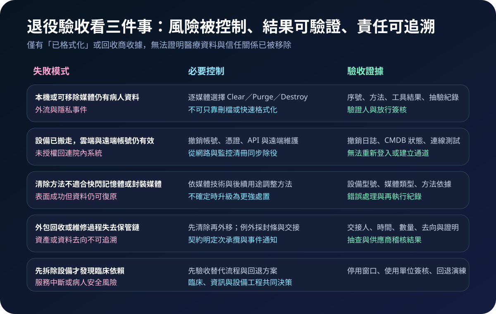

醫療資安國際觀察 · 2026-09-29
醫療設備退役如何避免資料殘留：從清除決策到放行證據
作者：Dr. William｜醫療資訊與資安治理實務工作者
醫療設備停止臨床使用，不代表病人資料、系統憑證與遠端連線已經失效。安全退役需同時處理設備本體、儲存媒體、雲端服務、維修平台與院內信任關係，並在外移前留下可驗證證據。
名詞解釋：資料清除不是按下格式化
Media Sanitization是讓媒體上的目標資料無法以合理方式存取或復原；NIST SP 800-88 Rev. 2 將處置概念分為 Clear、Purge 與 Destroy。Clear 以邏輯方式處理可存取位置；Purge 採更強方法降低先進技術復原的可行性；Destroy 使媒體無法再作原用途。醫療設備退役還需處理帳號、憑證、API、遠端支援與雲端副本，不能只看內接硬碟。
國際現況與適用邊界
NIST 於 2025 年 9 月發布 SP 800-88 Rev. 2，強調以企業層級的資料清除計畫、媒體特性、資訊敏感度與驗證方式管理處置流程。該文件是美國聯邦技術指引，可作為方法參考，不是台灣醫療機構的法定處置標準。
美國 FDA 於 2026 年 2 月發布醫療器材網路安全上市前提交指引，將網路安全風險管理、產品安全開發框架、標示與上市後生命週期納入製造商提交考量。其適用對象與法源屬美國醫療器材監管情境，不應直接轉寫成台灣醫院或供應商的法定義務。
對台灣醫療機構的適用方式：可把國際文件轉化為院內退役驗收條件，包括資料位置清冊、媒體處置方法、臨床停用、信任撤銷、外包保管鏈及證據保存。實際要求仍須依台灣法規、主管機關公告、採購契約、院內政策與設備風險決定。
規劃：先決定設備離院前要證明什麼
範圍應涵蓋影像設備、監測儀器、檢驗系統、工作站、行動裝置、閘道器、可移除媒體與供應商維修機。責任需分配給臨床單位、醫工、資訊、資安、隱私、採購與資產管理。驗收指標可包含資產與媒體對應率、資料位置盤點完成率、清除成功率、抽驗異常率、帳號與憑證撤銷時間、外包交接完整率及例外逾期數。

實作：七階段建立可驗證退役閉環
- 確認停用：完成替代服務、資料移轉、使用單位簽核與必要回退方案。
- 完整盤點：記錄設備序號、內接與可移除媒體、快取、日誌、帳號、憑證、雲端與備份位置。
- 風險分級：依資料敏感度、媒體技術、設備完整性、後續用途與可拆卸性選擇處置。
- 受控清除：使用核准工具與程序，保留執行人、時間、方法、版本、結果與錯誤。
- 獨立驗證：確認目標媒體與資料範圍正確，檢查工具錯誤，必要時抽驗或升級處置。
- 撤銷信任：關閉院內帳號、憑證、API、VPN、遠端支援、監控與網路允許規則。
- 放行交接：設備、媒體與證據同步交付；無法驗證者保留、隔離或經核准銷毀。
風險：資料已刪除，不等於設備已安全退場
常見失敗包括只做快速格式化、遺漏封裝快閃記憶體、未移除雲端副本、供應商帳號持續有效、設備先送修後補文件、清除工具顯示成功卻沒有確認範圍，以及停用後才發現臨床流程仍依賴該設備。控制需同時涵蓋資料、身分、連線、臨床與保管鏈。

可執行清單
- 設備本體、媒體、雲端、備份、維修平台與列印佇列是否全部納入盤點？
- 清除方法是否符合媒體技術、資料敏感度與設備後續用途？
- 是否保留資產序號、方法、工具版本、結果、錯誤與驗證人？
- 院內帳號、憑證、API、VPN、遠端維護與網路規則是否同步撤銷？
- 臨床替代流程、停用窗口與回退方案是否完成驗收？
- 外包交接是否記錄人員、時間、數量、去向、次承攬與銷毀證明？
- 無法清除或無法驗證的例外是否停止外移，並設定責任人與到期日？
來源
- NIST｜SP 800-88 Rev. 2, Guidelines for Media Sanitization（發布：2025-09-26；查閱：2026-09-29）
- FDA｜Cybersecurity in Medical Devices: Quality Management System Considerations and Content of Premarket Submissions（發布：2026-02-03；查閱：2026-09-29）
內容說明
本文依健康台灣深耕計畫相關治理內容整理，並參考 NIST 與 FDA 公開資料，提出台灣醫療機構可採用的設備退役、資料清除、信任撤銷、外包交接與證據驗收方法；不把美國聯邦技術指引或醫療器材監管文件視為台灣法定義務，也不取代主管機關公告、法律意見、採購契約、設備原廠程序或個案臨床風險評估。